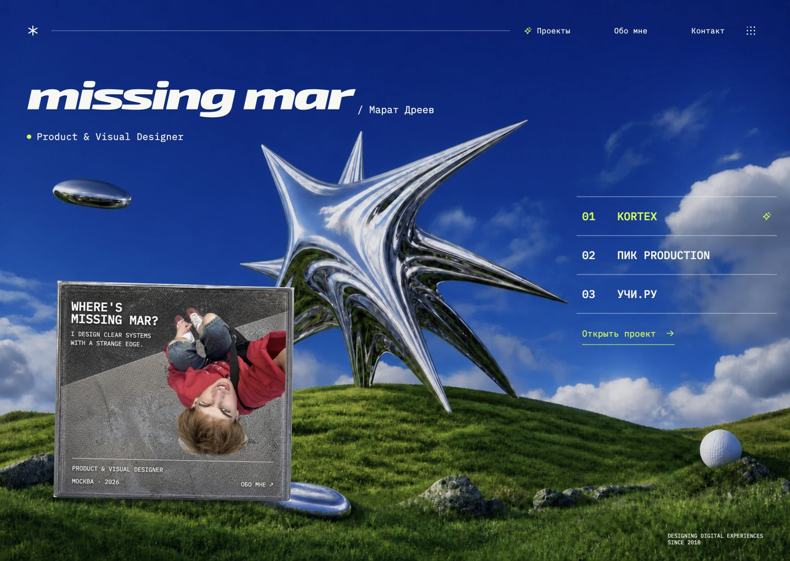
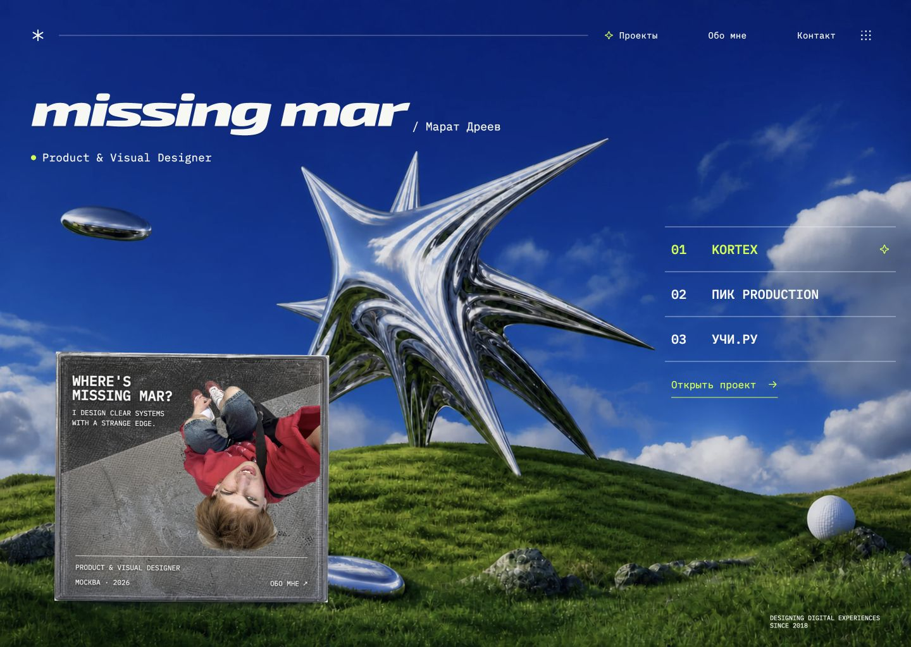

<!doctype html>
<html lang="ru">
<meta charset="utf-8">
<title>Restored live UI comparison</title>
<style>
  * { box-sizing: border-box; }
  body { margin: 0; padding: 18px; color: #fff; background: #050b1e; font: 14px monospace; }
  main { display: grid; grid-template-columns: 1fr 1fr; gap: 18px; }
  figure { margin: 0; }
  figcaption { margin-bottom: 8px; }
  img { display: block; width: 100%; height: auto; border: 1px solid #90a8dc; }
</style>
<main>
  <figure>
    <figcaption>PREVIOUS LIVE UI — approved structure</figcaption>
    
  </figure>
  <figure>
    <figcaption>RESTORED — live controls, grounded panel, four-point stars</figcaption>
    
  </figure>
</main>
</html>
